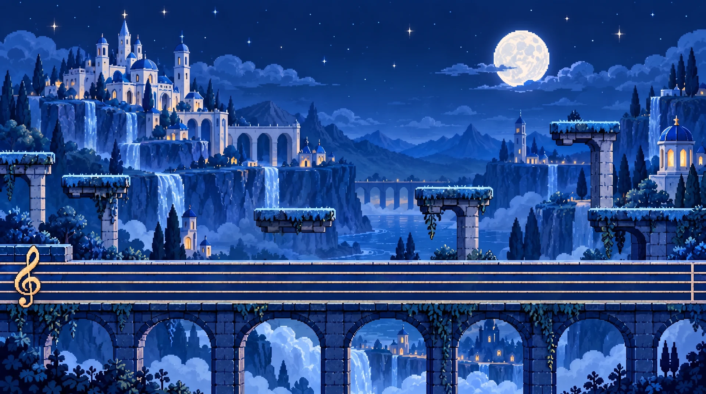
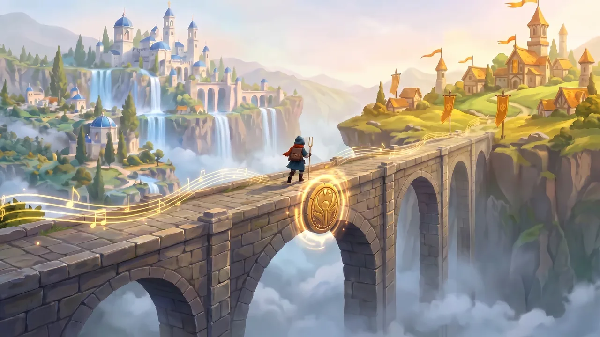
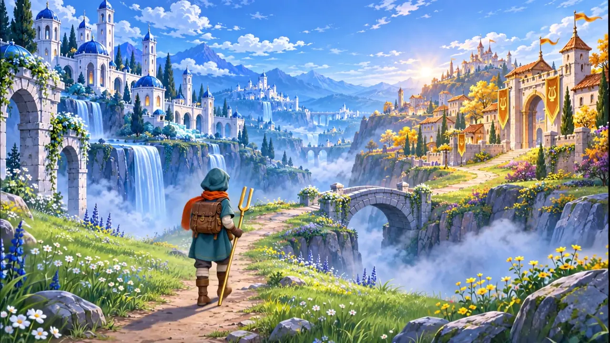

Modulación
Cada tonalidad es un reino. Aprende a viajar de uno a otro.

Sesión 1Viajar entre tonalidadesDos viajeros, el camino de Do mayor y el momento en que el mundo se abre.
Sesión 2Tres formas de viajarEl puente, el desnivel y el portal: diatónica, cromática y enarmónica.
Sesión 3Construye el puenteDos ejemplos resueltos (7 y 8 casillas) y tu propio puente… si aguanta. Sesión 4Práctica librePuentes de 7 y 8 casillas, en mayor y en menor, sin ayudas. Tantos como quieras.
Sesión 4Práctica librePuentes de 7 y 8 casillas, en mayor y en menor, sin ayudas. Tantos como quieras.